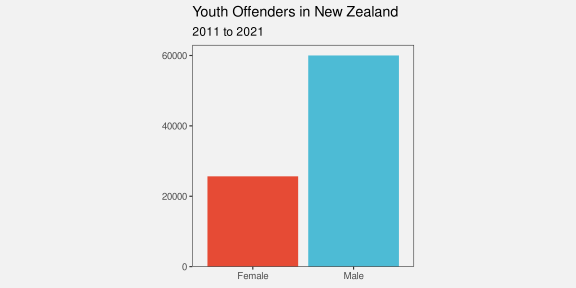
9 Combining Mappings
Most data visualisations involve more than one data variable. For example, the bar plot in Figure 3.2 involves data on the ethnic group of offenders and data on the count of offenders in each ethnic group.
In Figure 3.2, each data value is mapped to a visual feature of a data symbol (Figure 3.1). For example, the ethnic group is encoded as the vertical position of the bars and the count of offenders is encoded as the length of the bars.
We have so far only looked at mappings from data values to visual features in isolation. For example, we know that the mapping from ethnic group to position is effective because position is appropriate for qualitative data and position has sufficient capacity to differentiate between four ethnic groups. We also know that mapping the count of offenders to length is effective because length is appropriate for quantitative data and length provides an accurate decoding. Furthermore, the lengths of the bars are all aligned (they have a common baseline) and the bars only differ in ways that reflect differences in the data (the bars all have the same width and colour).
In this section, we begin to consider what happens when mappings are used in combination. For a start, we will just extend our thinking to data visualisations that involve mapping two data variables to two visual features, like ethnic group and count to position and length. Furthermore, we will restrict ourselves to mappings where each pair of data values are encoded as a single data symbol (Figure 9.1). For example, each combination of ethnic group and count produces a single bar.

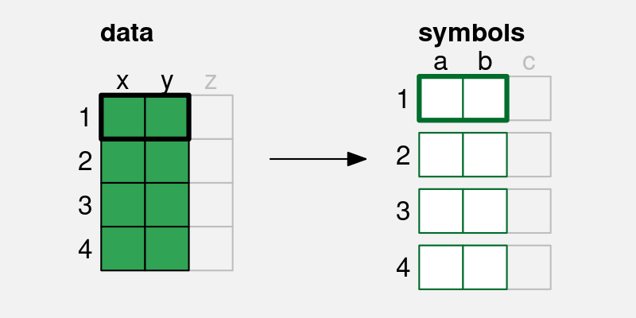
a and b) is mapped to two visual features (x and y) of a single data symbol.
9.1 Independent visual features
A bar plot involves encoding a qualitative variable as bar position and a quantitative variable as bar length (e.g., Figure 3.2). We know that each visual feature is effective on its own—we can decode from positions to qualitative values and we can decode from lengths to quantitative values—but another reason why the bar plot is effective overall is because the two visual features act independently.1 Our perception of the horizontal length of the bars is not affected by the vertical position of the bars.2
Figure 9.2 demonstrates that we can also add colour to the mix without creating any interactions between visual features. The fact that the bottom two bars are blue and red does not affect our ability to perceive that they have different lengths.
One reason why a bar plot is effective is because data values are encoded as visual features that can be decoded independently.
9.2 Scatter plots
Table 9.1 shows data gathered on the performance of all twenty teams at the 2023 Rugby World Cup. Most measures are positive, for example, more points is better, but there are also a couple of negative measures: more tackles may just mean that the team was weak and was always being attacked; and more disciplinary cards (either yellow or red) is definitely a bad sign.
| country | sphere | ycards | rcards | breaks | tackles | points | converts | offloads | tries | runs |
|---|---|---|---|---|---|---|---|---|---|---|
| Namibia | South | 1.0 | 0.5 | 2.5 | 102.0 | 9.2 | 0.5 | 2.2 | 0.8 | 92.0 |
| Romania | North | 1.2 | 0.0 | 2.8 | 142.5 | 8.0 | 0.8 | 1.5 | 1.0 | 81.0 |
| Chile | South | 1.2 | 0.0 | 3.8 | 132.2 | 6.8 | 0.5 | 5.2 | 1.0 | 102.2 |
| Samoa | South | 1.2 | 0.2 | 3.8 | 109.5 | 23.0 | 2.0 | 9.2 | 2.8 | 102.5 |
| Australia | South | 0.5 | 0.0 | 5.2 | 108.2 | 22.5 | 1.8 | 7.8 | 2.8 | 110.8 |
| Georgia | North | 0.5 | 0.0 | 5.2 | 149.8 | 16.0 | 1.0 | 8.0 | 1.8 | 114.0 |
| Uruguay | South | 0.5 | 0.0 | 5.2 | 126.8 | 16.2 | 1.5 | 3.0 | 2.2 | 99.2 |
| South Africa | South | 0.4 | 0.0 | 5.4 | 139.1 | 29.7 | 2.7 | 5.4 | 3.9 | 95.1 |
| England | North | 0.0 | 0.1 | 5.6 | 124.9 | 31.6 | 2.3 | 3.9 | 3.0 | 100.3 |
| Fiji | South | 1.0 | 0.0 | 5.6 | 99.8 | 22.4 | 2.2 | 8.8 | 2.4 | 138.0 |
| Wales | North | 0.6 | 0.0 | 5.6 | 167.4 | 32.0 | 3.2 | 7.6 | 3.8 | 109.4 |
| Japan | North | 0.8 | 0.0 | 6.0 | 166.2 | 27.2 | 2.8 | 4.8 | 3.0 | 89.5 |
| Tonga | South | 0.5 | 0.2 | 6.0 | 141.2 | 24.0 | 2.0 | 8.2 | 3.2 | 107.5 |
| Argentina | South | 0.3 | 0.0 | 6.3 | 111.7 | 26.4 | 2.6 | 6.0 | 2.7 | 131.3 |
| Italy | North | 0.5 | 0.0 | 6.8 | 138.2 | 28.5 | 3.8 | 7.0 | 3.8 | 116.0 |
| Portugal | North | 0.5 | 0.2 | 7.8 | 148.0 | 16.0 | 1.5 | 9.2 | 2.0 | 118.2 |
| Ireland | North | 0.2 | 0.0 | 8.8 | 126.4 | 42.8 | 5.0 | 9.4 | 6.0 | 137.6 |
| France | North | 0.2 | 0.0 | 11.0 | 115.2 | 47.6 | 5.0 | 10.6 | 6.0 | 126.0 |
| Scotland | North | 0.2 | 0.0 | 11.2 | 123.0 | 36.5 | 4.8 | 13.8 | 5.2 | 151.2 |
| New Zealand | South | 0.7 | 0.3 | 12.6 | 123.4 | 48.0 | 5.0 | 8.3 | 7.0 | 139.3 |
Figure 9.3 shows a scatter plot of the number of “clean breaks” per game versus the number of “tries scored” per game for each team. A clean break means that a team has broken through the opposition defence and a “try scored” means that the team has earned 5 points. A clean break implies an opportunity to score a try, but does not guarantee that a try will be scored.
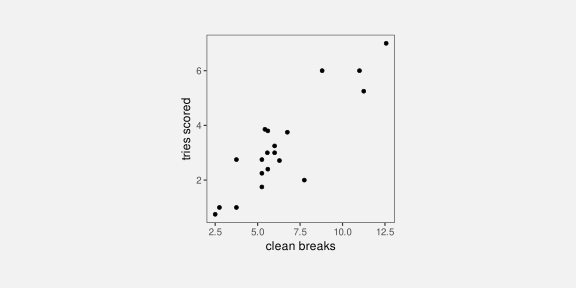
The data symbol in a scatter plot is a data point, in this case a circle. There are two mappings in the scatter plot in Figure 9.3: the quantitative number of clean breaks is encoded as the horizontal position of the data points and the quantitative number of tries scored is encoded as the vertical position of the data points.
We know from Chapter 3 that we should be able to accurately decode the original data values from the positions of the data points. For example, we can easily see that one team scored a little over 7.5 clean breaks per game and we can see that two teams scored about 6 tries per game.
However, there is something else going on in the scatter plot. The two explicit encodings—horizontal and vertical position—interact to create an additional visual feature:3 position in space (Figure 9.4).4 For example, we can perceive not only horizontal and vertical distances between data points, but also euclidean distances between data points (“as the crow flies”).
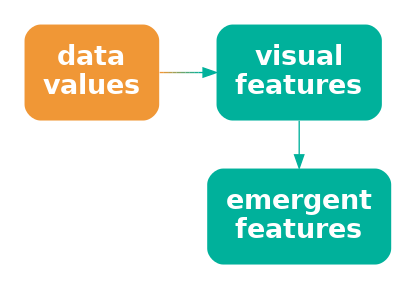
One reason why a scatter plot is effective at conveying relationships between variables is because the mappings of data values to visual features—horizontal position and vertical position—interact to produce an additional visual feature: position in space.
Furthermore, our visual system allows us to decode visual summaries (see Section 8.2) from position in space (see Figure 9.5).5 For example, in Figure 9.3 we can easily see a positive correlation between the number of clean breaks and the number of tries scored. We can also easily see clusters of data points; the four data points in the top-right corner of the plot appear separate from the other data points because they share a similar position in space (see Section 2.7).

Although a scatter plot is similar to a bar plot because they both involve two encodings—position and length for a bar plot and horizontal position and vertical position for a scatter plot—there are additional decodings possible from the data symbols in a scatterplot because the additional visual feature of position in space emerges from the combination of horizontal and vertical position.
One reason why a scatter plot is effective at conveying relationships between variables is because we are able to decode visual summaries from a collection of positions in space.
9.3 Case study: Mosaic plots
Table 9.2 shows a table of counts for offences committed in New Zealand in 2021. For each offence, we know the sex of the offender and what action was taken against the offender.
| Female | Male | |
|---|---|---|
| Court Action | 13950 | 39526 |
| Non-Court Action | 8717 | 19663 |
| Not Proceeded With | 381 | 933 |
Figure 9.6 shows a mosaic plot of the data in Table 9.2.6 This is an effective data visualisation for making several comparisons: the overall proportion of male versus female offenders; within each sex, the proportion of different actions against offenders; between sexes, the distribution of different actions; and the overall proportions of combinations of sex and action against offenders.
For example, we can see that there are more male offenders than female offenders, court action is more common than non-court action for both males and female offenders, court action is more common for male offenders than for female offenders, and the most common offences involve male offenders and result in court action.
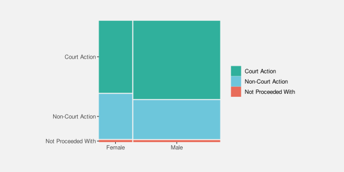
A mosaic plot is another example of a data visualisation that maps data summaries to data symbols rather than raw data. The data symbols are rectangles, the proportions of male versus female offenders are encoded as the widths of the rectangles, and the proportions of different actions taken, within males and females, are encoded as the heights of the rectangles (see Table 9.3).
| Female | Male | |
|---|---|---|
| Court Action | 0.28 | 0.72 |
| Non-Court Action | 0.28 | 0.72 |
| Not Proceeded With | 0.28 | 0.72 |
| Female | Male | |
|---|---|---|
| Court Action | 0.61 | 0.66 |
| Non-Court Action | 0.38 | 0.33 |
| Not Proceeded With | 0.02 | 0.02 |
One reason why a mosaic plot is effective is because it maps proportions and conditional proportions, rather than raw counts, to the visual features of rectangles.
A mosaic plot is also an example of a data visualisation that maps to visual features that interact. The explicit mappings involve encoding proportions as the widths and heights of the rectangles and we know from Section 3.3 that this will allow accurate decoding from lengths to proportions.
One reason why a mosaic plot is effective is because it maps proportions to lengths.
However, the interaction of these mappings produces an emergent feature, which is the area of the rectangles (Figure 9.4). Importantly, these areas correspond to additional data summaries, in this case, the overall proportion of offences in each combination of sex and action taken.
One reason why a mosaic plot is effective is because the mappings
to length and height interact to produce area, which represents overall proportions.
Mosaic plots also provide a simple visual check for independence between factors. For example, in Figure 9.6 we can see that the action taken is reasonably independent of the sex of the offender because the heights of the rectangles are similar for both Male and Female offenders (the conditional proportions are roughly the same).
One weakness of mosaic plots is that area is not the most accurate visual feature (Section 3.5), so we are not able to decode overall proportions from the rectangle areas as accurately as we are able to decode the proportions that are represented by the separate widths and heights of the rectangles.
Another weakness is that the lengths and heights of the rectangles are unaligned (Section 5.2). This compromises the accuracy of comparisons of widths between categories or the comparisons of heights between categories. This weakness is greater if there are more categories and/or larger differences between categories than we see in Figure 9.6. For example, Figure 9.7 shows a mosaic plot of the proportions of offenders in different age groups and, within age groups, the proportions of actions against the offender at a finer level of detail than in Figure 9.6. If we attempt to compare the proportion of offences that result in “Formal Warnings” in younger age groups versus older age groups, we are hampered by the fact that the pink rectangles do not have a common vertical baseline. As a side note, we are also hampered in that case by the distance and distractors between the rectangles (see Section 5.1); the ordering of the variables and the ordering of categories can have an impact on the effectiveness of a mosaic plot just like ordering the bars of a bar plot.
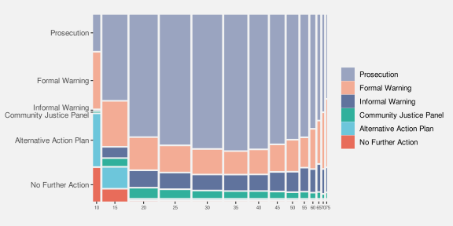
These weaknesses are exacerbated for mosaic plots of more than two variables. For example, the mosaic plot in Figure 9.8 shows the proportions of youth versus adult offenders, then, within age levels, the proportions of male versus female offenders, then, within combinations of age levels and sex, the proportions of different actions taken against the offender. Even though there are only very few levels for each variable, our ability to compare heights and widths of rectangles is impaired by inconsistent baselines, distance between rectangles, and distractors.
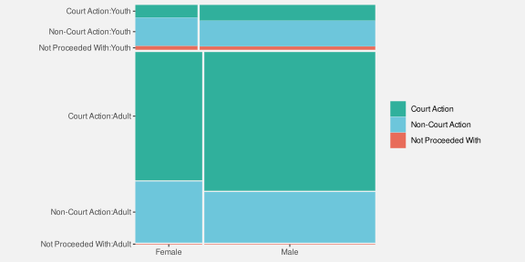
A final weakness with mosaic plots is that the shape of the rectangles changes as well as the area. In Section 7.5 we saw that changes in visual features should only reflect changes in the data.
Figure 9.9 shows that we can create different rectangles with the same area, but different shapes. There can be rectangles within a mosaic plot with the same area, which represents the same overall probability data value, but with different shapes. The different shapes are a visual signal of differences in the data when in reality no difference exists.

9.4 Case study: Interaction plots
Figure 9.10 shows an interaction plot of the number of offenders in different ethnic groups, comparing 2011 to 2021. The raw data are shown in Table 9.4.
| group | year | count |
|---|---|---|
| Māori | 2011 | 5957 |
| Pasifika | 2011 | 1092 |
| European/Other | 2011 | 5775 |
| Unknown | 2011 | 194 |
| Māori | 2021 | 2869 |
| Pasifika | 2021 | 328 |
| European/Other | 2021 | 1833 |
| Unknown | 2021 | 1589 |
The purpose of the interaction plot is to show the change in the number of offenders between 2011 and 2021 for each of the ethnic groups. If the lines of the interaction plot were parallel we would conclude that the same change has happened to all ethnic groups; the fact that the lines are not parallel indicates that there have been different changes in some ethnic groups compared to other ethnic groups.7
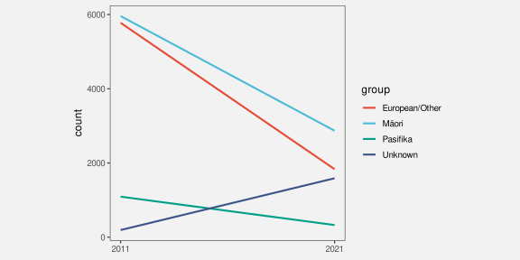
The data symbols in Figure 9.10 are straight line segments. The year is encoded as the horizontal start and end position of the lines and the number of offenders is encoded as the vertical start and end position of the lines. The ethnic group is encoded as the colour of the lines. These mappings are effective for decoding the raw data values in Table 9.4 from the end points and the colours of the lines.
In addition, the explicit mappings generate an emergent feature: the angle of the lines. Furthermore, the angle of the lines allow us to decode a data summary: the change in the number of offenders between 2011 and 2021 (see Figure 9.5).
An interaction plot is effective because it allows us to decode changes in the data values from the angles of the lines.
It is more difficult to perceive the change in the number of offenders for each ethnic group in a bar plot like the one shown in Figure 9.11. Partly this is because we have to decode the lengths of two bars for each ethnic group rather than the slope of a single line.8
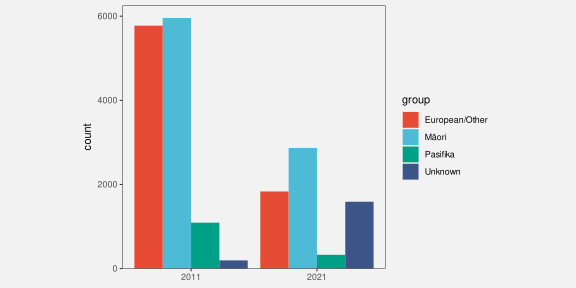
9.5 Dangers of combining mappings
Figure 9.12 shows a plot of changes in health spending by successive New Zealand governments.9 In this data visualisation, the average change in health spending over a government’s entire term is encoded as the height of a bar, with the duration of that government’s term encoded as the width of the bar. Because height and width are visual features that interact, the result is an area for each government’s term. However, that area has no sensible interpretation; what does a percent multiplied by a number of years mean? The areas of the bars do not correspond to any property of the data values.
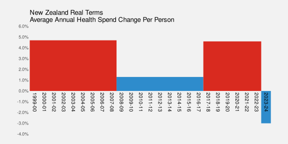
The interaction of visual features can be a boon when the interaction produces an emergent feature that can be decoded to properties of the data (as in a scatter plot, or mosaic plot, or interaction plot).
However, it is possible to create a poor data visualisation if we produce an emergent feature that has no correspondence with data values (Figure 9.13).10
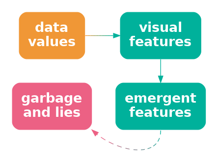
Figure 9.14 shows a different representation of the data. In this case, the average change in health spending is encoded as the (vertical) position of a line and the duration is encoded as the length of the line. These visual features do not interact, so we no longer have a misleading emergent visual feature.
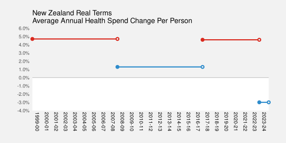
There is also the problem of separable when integral would be appropriate (reduce to separate effects inappropriately?) Is there an example?
Must say that chroma and luminance and hue are all integral. Is this an example of integrating ineffectively?
9.6 Redundant mappings
In Section 9.3, we focused on the encoding of quantitative values (proportions) as the widths and heights of the rectangular data symbols in a mosaic plot, for example, Figure 9.6. There are also qualitative values encoded in a mosaic plot: the different categories, like Male and Female.
The main encoding of the categories in a mosaic plot is as the position of the rectangles. For example, in Figure 9.6, the rectangles for Female are to the left and the rectangles for Male are to the right and the rectangles for different court actions are stacked vertically, with Not Proceeded With at the bottom, Non-Court Action in the middle, and Court Action at the top.
In addition, different court actions are encoded as different colours. This additional encoding is redundant in the sense that we can already decode the court action from the vertical position of the bars. However, having the additional encoding means that we have two ways to decode the court action: from the vertical position and from the colour. This becomes much more useful when there are more categories (Figure 9.7) or more variables (Figure 9.8).11
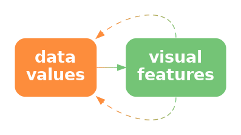

a) is mapped to not just one visual feature (x), but also a second visual feature (y), of a single data symbol. If we encode data values using multiple visual features, then multiple decodings are possible.
One useful application of redundant encoding is to accommodate viewers with CVD (Section 6.4). Having a secondary decoding alongside colour allows for the fact that the colour decoding may fail for some viewers.
9.7 Summary
The mappings involved in a bar plot—quantitative data values encoded as lengths and qualitative values encoded as position—are effective because we are able to perceive some combinations of visual features, such as length, position, and colour independently.
A scatter plot is effective for perceiving relationships between variables because the mappings of quantitative data values to both horizontal and vertical positions interact to produce position in space and our visual system is capable of producing useful visual summaries of position in space, such as correlation.
The effectiveness of a mosaic plot also depends upon the interaction of visual features: marginal and conditional proportions are mapped to widths and heights, which produce area to represent overall proportions.
Care must be taken to avoid generating emergent features that do not represent any meaningful property of the data.
Huskinson, Peter. 2024. “Follow the Money to See What Budget 2024 Spends on Health.” New Zealand Doctor Rata Aotearoa. https://www.nzdoctor.co.nz/article/opinion/follow-money-see-what-budget-2024-spends-health.
Pomerantz, James R., and Anna I. Cragin. 1994. “Emergent Features and Feature Combination.” Attention, Perception, & Psychophysics 55 (1): 48–55.
Refer to the literature that talks about separable and integral AND configural visual features. e.g., carswell and wickens (1990) looks at configural↩︎
Technically, there is an interaction because lengths that are further apart from each other vertically are harder to compare (see Section 5.1). However, compared to visual features that strongly interact, length and position are reasonably independent.↩︎
Need citations to literature that mention integral visual features. Admit a range rather than a dichotomy. Munzner has good examples?↩︎
Relate this to mentions in literature of “emergent features”, e.g., Pomerantz and Cragin (1994). Acknowledge that my use is a little loose because the use in the literature is really about separate data symbols combining to create emergent features (like clusters?). MacEachren 1995 uses emergent as “configural” (integral, but still also separable) “Vision Science: Photons to Phenomenology” Stephen Palmer, Figure 2.1.5 caption “The arrangement of several dots in a line give rise to emergent properties, such as length, orientation, and curvature, that are different from the properties of the dots that compose it.”
NOTE that “Emergent features and feature combination” Pomerantz and Cragin (2014) (is this the same as Pomerantz and Cragin (1994) ???) explicitly differentiate between (fast) emergent features and “normal” (slow) feature integration that I am loosely using here.↩︎
Citations to literature on ensembles again, this time specifically to correlation in scatter plots. Talk about how, although there is some experimental support for reasonable accuracy of correlation from scatter plot (with some bias - specifically underestimation), there is not much experimental evidence for which is best for perceiving correlations Eg scatter plot vs parallel coords etc↩︎
This two-dimensional mosaic plot could also be called a spine plot. Mosaic plot is the more general term that includes plots of more than two qualitative variables.↩︎
An interaction plot is typically used in a more experimental setting where the x-axis might be different treatments and the groups might be different patient groups and the y-axis might be a measure of response to treatment. The outcome is then whether the treatment has had the same effect for different patient groups (or not).↩︎
Pinker 1990, p. 111 talks about the difficulty of extracting different sorts of information from different data symbols (bars vs lines).↩︎
Figure 9.12 is based on Figure 2 from Huskinson (2024).↩︎
This is the “compatibility principle” ? of Carswell and Wickens ?↩︎
“Clusters Beat Trend!? Testing Feature Hierarchy in Statistical Graphics” VanderPlas and Hofmann (2017) says redundancy helps
“Beyond Memorability: Visualization Recognition and Recall” Borkin et al (2015) also says redundancy helps
“The Science of Visual Data Communication: What Works” Franconeri et al (2021) says it doesn’t (though only with expert opinion like Tukey to back it up. Exception is to allow for colour-blind viewers.↩︎